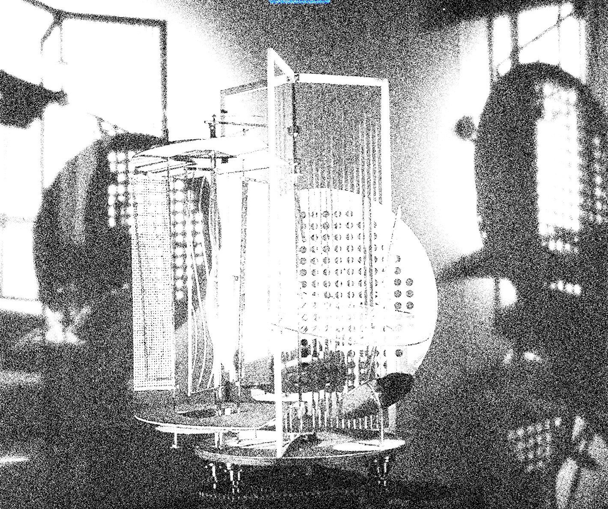

라즐로 모홀리 나기는 바우하우스에서 금속공방을 담당하고, 영화와 디자인,
사진, 건축 등 여러 시각예술분야를 넘나들며 작업했다.
그는 삶과 예술의 유기적인 결합을 지향했고, 과학기술의
진보로 등장한 사진과 영화같은 매체들이 인간의 경험과 감각의 지평을
넓혀주는 새로운 예술의 수단으로 기능한다고 생각했다.이러한 생각을 바탕으로
기술의 미학적인 가능성을 끊임없이 탐구하고 실험했다. 모홀리나기는 공간과 새로운 매체로서
빛에대한 이론을 확립하였는데, 1930년 빛,공간 변조기라는 조각 작품을 발표했다. 빛공간
변조기는 120cmx120cm 크기의 네모난 상자로 구성 되어있으며 무대장치를 위해,
둥근 구멍이 정면에 뚫려있다. 구멍의 안쪽 둘레에는 황색,녹색, 청색,백색의 전구가
달려있고 이 전구들은 미리계획된 순서에따라 서로 다른 장소에서 빛을 발한다. 이 조명들은
반투명, 투명, 구멍이 뚫린 재료들로 구성된 끊임없이 움직이는 기계를 빛나게 한다. 빛을
3차원적으로 실현한 이작업은 빛과 관찰자를 연결하는 매체임을 확인하게 해주는
작업이었다. 빛,공간 변조기는 빛의 변환과정이 극대화되어야하기 때문에
금속재료를 사용했다. 재료의 속성과 본질을 이해하고 표현한 대표적인 작업이다. 이밖에도
포토그램과 빛드로잉이있다. 새로운 매체를 통해 관찰자의 시각을 넓혀주는 작품이다. 우리는
디지털 미디어 환경의 변화에 기민하며 기술의 변화에 대비해 방법을 모색한다. 어쩌면
쫒아가기 바쁘다. 이는 창작자의 숙명일지도 모른다. 모홀리나기는 빠르게
변화하는 시대에 기술을 하나의 도구로써 표현의 폭을 넓히며 예술을 표현했다. 표현의
주체였던 라즐로 모홀리처럼 우리는 기술을 이용하여 새로운 시각을 발견할 필요가있다.
Light은 라즐로모홀리의 기술과 재료를 대한 태도에 공감하여 진행한 작업이다.
Laszlo Moholinagy is in charge of the metal workshop at the Bauhaus.
In various visual arts such as painting, sculpture, typography, design, photography and architecture.
I worked across. He pursued an organic combination of life and art,
Media such as photographs and movies that have emerged as advances have helped to transform the horizons of human experience and senses.
I thought it functioned as a means of expanding new art.
He constantly explored and experimented with the aesthetic possibilities of technology. Moholina is a space and a new medium
He established the theory of light, and in 1930 he published a sculpture called Light and Space Modulator.